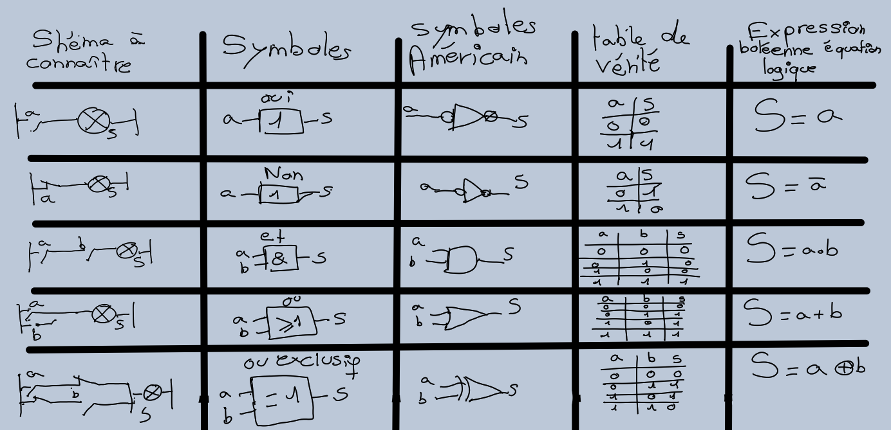

<h1><mark>M. Flandin</mark></h1><br/><!--<mark> sert à surligner le mot et <br> à mettre à la ligne-->
<h2>2 les fonctions booléennes</h2><!--<h...> = taille de la phrase-->
<link rel="stylesheet" href="CSS/Flandin_fonctions.css" />
     <title>Premiers tests du CSS</title>
    <br/><!--height et widht sert à savoir qu'elle taille de l'image on veut et alt sert pour dire ce que devait être l'image si elle n'apparaissait pas et donner l'image qu'on veut pour qu'elle appparaissent-->
    <h2><em><a href="test de la page.html">Leçon</a></em></h2><!--Cela sert à aller dans l'accueil <em sert à mettre en italique-->
